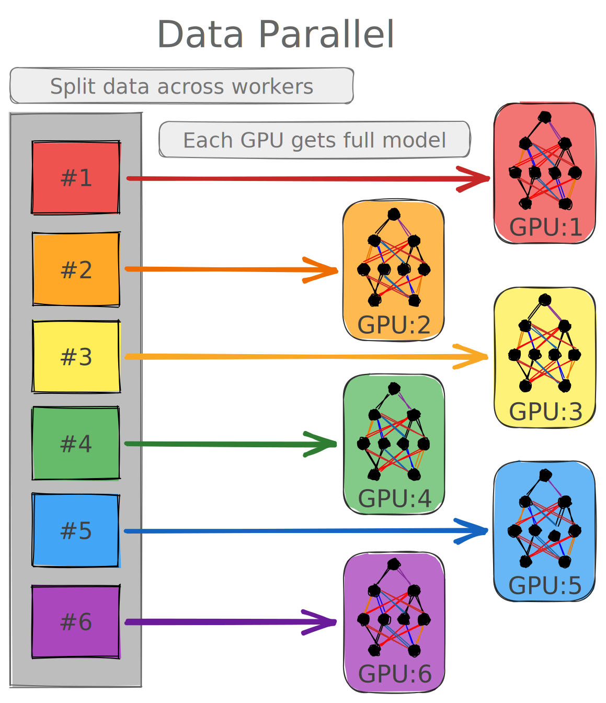

<!DOCTYPE html>
<html lang="en">
  <head>
    <meta charset="utf-8" />
    <meta name="viewport" content="width=device-width, initial-scale=1.0, maximum-scale=1.0, user-scalable=no" />

    <title>Scaling Deep Learning Applications</title>
    <link rel="stylesheet" href="dist/reveal.css" />
    <link rel="stylesheet" href="dist/theme/black.css" id="theme" />
    <link rel="stylesheet" href="plugin/highlight/monokai.css" />
	<link rel="stylesheet" href="css/layout.css" />
	<link rel="stylesheet" href="plugin/customcontrols/style.css">
	<link rel="stylesheet" href="plugin/chalkboard/style.css">

    <link rel="stylesheet" href="./css/custom.css" />

    <script defer src="dist/fontawesome/all.min.js"></script>

	<script type="text/javascript">
		var forgetPop = true;
		function onPopState(event) {
			if(forgetPop){
				forgetPop = false;
			} else {
				parent.postMessage(event.target.location.href, "app://obsidian.md");
			}
        }
		window.onpopstate = onPopState;
		window.onmessage = event => {
			if(event.data == "reload"){
				window.document.location.reload();
			}
			forgetPop = true;
		}

		function fitElements(){
			const itemsToFit = document.getElementsByClassName('fitText');
			for (const item in itemsToFit) {
				if (Object.hasOwnProperty.call(itemsToFit, item)) {
					var element = itemsToFit[item];
					fitElement(element,1, 1000);
					element.classList.remove('fitText');
				}
			}
		}

		function fitElement(element, start, end){

			let size = (end + start) / 2;
			element.style.fontSize = `${size}px`;

			if(Math.abs(start - end) < 1){
				while(element.scrollHeight > element.offsetHeight){
					size--;
					element.style.fontSize = `${size}px`;
				}
				return;
			}

			if(element.scrollHeight > element.offsetHeight){
				fitElement(element, start, size);
			} else {
				fitElement(element, size, end);
			}		
		}


		document.onreadystatechange = () => {
			fitElements();
			if (document.readyState === 'complete') {
				if (window.location.href.indexOf("?export") != -1){
					parent.postMessage(event.target.location.href, "app://obsidian.md");
				}
				if (window.location.href.indexOf("print-pdf") != -1){
					let stateCheck = setInterval(() => {
						clearInterval(stateCheck);
						window.print();
					}, 250);
				}
			}
	};


        </script>
  </head>
  <body>
    <div class="reveal">
      <div class="slides"><section  data-markdown><script type="text/template">

<div class="reset-margin" style="font-family: 'Inter',sans-serif; background-color: #303030; border-radius: 8px!important; padding: auto; align: center; position: absolute; left: 48px; top: 140px; height: 175px; min-height: 175px; width: 864px; display: flex; flex-direction: column; align-items: center; justify-content: space-evenly" >

#### Scaling Deep Learning Applications <!-- .element: style="font-family: 'Inter'; color: #F8F8F8" align="stretch" -->
    
<i class="fab fa-github"></i> [`CompPerfWorkshop/05_scaling-DL`](https://github.com/argonne-lcf/CompPerfWorkshop/tree/main/05_scaling-DL)
</div>

<div class="reset-margin" style="line-height: 0.6em; position: absolute; left: 0px; top: 385px; height: 210px; min-height: 210px; width: 960px; display: flex; flex-direction: column; align-items: center; justify-content: flex-start" >

Sam Foreman <!-- .element: style="font-family: 'Inter'; font-size: 1.2em; font-weight: 500; line-height: 0.6; color: #E0E0E0!important; vertical-align: bottom!important" -->

May, 2022 <!-- .element: style="font-family: 'Nanum Pen Script'; font-size: 1.6em; color: #616161; vertical-align: top; font-weight: 400" -->
</div>

<div class="reset-margin flex-even" style="font-size: 1.5em; position: absolute; left: 0px; top: 630px; height: 70px; min-height: 70px; width: 960px; display: flex; flex-direction: row; align-items: center; justify-content: space-evenly" align="left">


<div class="block">

<!-- .element: style="margin-left: 2%; margin-bottom: 2%" -->

[<i class="fab fa-github"></i>](https://github.com/argonne-lcf/CompPerfWorkshop)
[<i class="fas fa-home"></i>](https://samforeman.me)
[<i class="fab fa-twitter"></i>](https://twitter.com/saforem2)

</div>


</div>

<div class="reset-margin" style="position: absolute; left: 672px; top: 490px; height: 210px; min-height: 210px; width: 288px; display: flex; flex-direction: column; align-items: flex-end; justify-content: flex-end" align="right">

</img>
</div>

<!-- .slide: class="drop" -->
</script></section><section  data-markdown><script type="text/template">
<div class="block">

<!-- .element: style="max-width: 75%; padding: 1%" class="note" -->

# Distributed Training

</div>


</script></section><section  data-markdown><script type="text/template">## Why train on multiple GPUs?
- Large batches may not fit in GPU memory
- Splitting the data across workers has the effect of increasing the batch size
- Smooth loss landscape
- Improved gradient estimators
- Less iterations for same number of epochs
    - May need to train for more epochs if another change is not made
    - e.g. boosting the learning rate
- See [Large Batch Training of Convolutional Networks](https://arxiv.org/abs/1708.03888)See Large Batch Training of Convolutional Networks
</script></section><section  data-markdown><script type="text/template">
# Recent Progess

<div class="block">

<!-- .element: style="font-size: 0.6em" -->
   
|              Year               |                  Author                  |            Batch Size            |                  Processor                  |           DL Library            |                Time                |                         Accuracy |
|:-------------------------------:|:----------------------------------------:|:--------------------------------:|:-------------------------------------------:|:-------------------------------:|:----------------------------------:| --------------------------------:|
| <span id="blue">**2016**</span> |   <span id="blue">He et al. [1]</span>   |    <span id="blue">256</span>    |    <span id="blue">Tesla P100 x8</span>     |  <span id="blue">Caffe</span>   |              <span id="blue">29 Hrs</span>               |                            <span id="blue">75.3%</span> |
|                                 |             Goyal et al. [2]             |               8192               |                 Tesla P100                  |             Caffe 2             |               1 hour               |                            76.3% |
|                                 |             Smith et al. [3]             |         8192 ->  16,384          |                full TPU pod                 |           TensorFlow            |              30 mins               |                            76.1% |
|                                 |             Akiba et al. [4]             |              32,768              |              Tesla P100 x1024               |             Chainer             |              15 mins               |                            74.9% |
|                                 |              Jia et al. [5]              |              65,536              |              Tesla P40  x2048               |           TensorFLow            |              6.6 mins              |                            75.8% |
|                                 |             Ying et al. [6]              |              65,536              |                TPU v3 x1024                 |           TensorFlow            |              1.8 mins              |                            75.2% |
|                                 |            Mikami et al. [7]             |              55,296              |              Tesla V100 x3456               |               NNL               |              2.0 mins              |                           75.29% |
| <span id="red">**2019**</span>  | <span id="red">**Yamazaki et al**</span> | <span id="red">**81,920**</span> | <span id="red">**Tesla V100 x 2048**</span> | <span id="red">**MXNet**</span> | <span id="red">**1.2 mins**</span> | <span id="red">**75.08%**</span> |

</div>


</script></section><section  data-markdown><script type="text/template">
# Distributed Training
- For additional information / general guidance, refer to [Writing Distributed Applications with PyTorch](https://pytorch.org/tutorials/intermediate/dist_tuto.html), or see [`[1]`](https://eng.uber.com/horovod/), [`[2]`](https://www.slideshare.net/AlexanderSergeev4/horovod-distributed-tensorflow-made-easy), [`[3]`](https://www.arxiv.org/abs/1802.05799)

<div class="footnote reset-margin" style="color: #757575; font-size: 0.8em; position: absolute; left: 0px; top: 420px; height: 280px; min-height: 280px; width: 960px; display: flex; flex-direction: column; align-items: center; justify-content: space-evenly" >

1. Sergeev, A., Del Balso, M. (2017) [Meet Horovod: Uber’s Open Source Distributed Deep Learning Framework for TensorFlow](https://eng.uber.com/horovod/)
2. Sergeev, A. (2017) [Horovod - Distributed TensorFlow Made Easy](https://www.slideshare.net/AlexanderSergeev4/horovod-distributed-tensorflow-made-easy).
3. Sergeev, A., Del Balso, M. (2018) Horovod: fast and easy distributed deep learning in TensorFlow [arXiv:1802.05799](https://www.arxiv.org/abs/1802.05799).
</div>

<!-- .slide: class="drop" -->
</script></section><section  data-markdown><script type="text/template">
# Development Trajectory 

<div class="block">

<!-- .element: style="font-size: 0.7em" align="center" -->

1. ❌ <span style="color:#757575;">Use single device training if the data and model can fit on one GPU, and training speed is not a concern  (not relevant for this section)</span>

2. ❌ <span style="color:#757575;">Use single-machine multi-GPU <a href="https://pytorch.org/docs/stable/generated/torch.nn.DataParallel.html"> `DataParallel` </a>  to make use of multiple GPUs on a single machine to speed up training with minimal code changes (not recommended, <tt>DDP</tt> preferred)</span>

3. ✅ Use single-machine multi-GPU <a href="https://pytorch.org/docs/stable/generated/torch.nn.parallel.DistributedDataParallel.html"> <tt>DistributedDataParallel</tt>  </a>  if you would like to further speed up training and are willing to write a little more code to set it up

4. ✅ Use multi-machine <a href="https://pytorch.org/docs/stable/generated/torch.nn.parallel.DistributedDataParallel.html"><tt>DistributedDataParallel</tt></a> and the <a href="https://github.com/pytorch/examples/blob/master/distributed/ddp/README.md"> launching script</a> if the application needs to scale across machine boundaries

5. ❓ <span style="color:#757575;">Use <a href="https://pytorch.org/docs/stable/distributed.elastic.html"> <tt>torch.distributed.elastic</tt></a> to launch distributed training if errors (e.g., out-of-memory) are expected or if resources can join and leave dynamically during training  (not covered in this tutorial)</span>

</div>


</script></section><section  data-markdown><script type="text/template">

<div class="block">

<!-- .element: style="max-width: 75%; padding: 1%" class="note" -->

# <span id="blue">Model</span>  
vs 
# <span id="red">Data </span>
### Parallelism

</div>


</script></section><section  data-markdown><script type="text/template">
## Model Parallelism
- Disjoint subsets of a neural network are assigned to different devices

    - All communication associated with subsets are distributed
    
- Communication happens between devices whenever there is dataflow between two subsets

- Typically **more complicated** to implement than data parallel training

- Suitable when the model is too large to fit onto a single device (CPU / GPU)
</script></section><section  data-markdown><script type="text/template">
## Model Parallelism
- Suitable when the model is too large to fit onto a single device (CPU / GPU)

    - Partitioning the model into different subsets is not an easy task
    
    - Might potentially introduce load imbalancing issues limiting the scaling efficiency
    
- 🤗[huggingface/transformers](https://github.com/huggingface/transformers) is a useful reference, and they have an excellent series of posts in their documentation on [Model Parallelism](https://huggingface.co/docs/transformers/parallelism)
</script></section><section  data-markdown><script type="text/template">
<div class="reset-margin stretch-column" style="position: absolute; left: 0px; top: 0px; height: 700px; min-height: 700px; width: 960px; display: flex; flex-direction: column; align-items: center; justify-content: space-evenly" >

<p style="line-height: 0" class="reset-paragraph image-paragraph"></img></p>

</div>

<!-- .slide: class="drop" -->
</script></section><section  data-markdown><script type="text/template">
## Data Parallelism
- Typically easier / simpler to implement

- Existing frameworks ([Horovod](https://horovod.readthedocs.io/en/stable/index.html), [DeepSpeed](https://github.com/microsoft/DeepSpeed), [DDP](https://pytorch.org/docs/stable/notes/ddp.html), etc.)

    - Typically relatively simple to get up and running (minor modifications to existing code)
    
    
- Our recent presentation on data-parallel training is available on [youtube](https://youtu.be/930yrXjNkgM) 
</script></section><section  data-markdown><script type="text/template">
## Data Parallelism 

- All of the workers own a replica of the model

- Global batch of data is **split into multiple mini-batches** and processed by **different workers**

- **Each worker computes the loss + gradients** w.r.t its local data

- Loss + Grads are averaged across workers before updating parameters

    - Relatively simple to implement, `MPI_Allreduce` is the only communication operation required
    
    - [Concepts — Horovod documentation](https://horovod.readthedocs.io/en/stable/concepts_include.html)
    </script></section><section  data-markdown><script type="text/template">
## Data Parallelism


- In the data-parallel approach, all workers own a replica of the model.

- The global batch of data is split into multiple minibatches, and processed by different workers.
</script></section><section  data-markdown><script type="text/template">

<div class="reset-margin stretch-column" style="position: absolute; left: 0px; top: 0px; height: 700px; min-height: 700px; width: 960px; display: flex; flex-direction: column; align-items: center; justify-content: space-evenly" >

<p style="line-height: 0" class="reset-paragraph image-paragraph"></img></p>

</div>

<!-- .slide: class="drop" -->
</script></section><section  data-markdown><script type="text/template">
## Data Parallelism

- Each worker computes the corresponding loss and gradients with respect to the local data it possesses.

- Before updating the parameters at each epoch, the loss and gradients are averaged among all the workers through a collective `allreduce` operation.

    - `MPI` defines the function `MPI_Allreduce` to reduce values from all ranks and broadcast the result of the reduction such that all processes have a copy of it at the end of the operation.
    
- There are multiple different ways to implement the allreduce, and it may vary from problem to problem<sup id="fnref:4" role="doc-noteref">1</sup>,<sup id="fnref:5" role="doc-noteref">2</sup>

<div class="footnotes" role="doc-endnotes">
<ol>
</ol>
</div>
</script></section><section  data-markdown><script type="text/template">    
<div class="reset-margin stretch-column" style="position: absolute; left: 0px; top: 0px; height: 700px; min-height: 700px; width: 960px; display: flex; flex-direction: column; align-items: center; justify-content: space-evenly" >

<p style="line-height: 0" class="reset-paragraph image-paragraph"></img></p>

</div>

<!-- .slide: class="drop" -->
</script></section><section  data-markdown><script type="text/template">## Best Practices

<div class="block">

<!-- .element: style="text-align: left" -->

<div class="callout callout-color5">
<div class="callout-title">
<div class="callout-icon">

<i class="fas fa-exclamation-triangle" ></i>

</div>
<div class="callout-title-inner">

Warning!

</div>
</div>
<div class="callout-content">

**Computation stalls during communication!**

Keeping the communication to computation ratio small is important for effective scaling

</div>
</div>

</div>


</script></section><section  data-markdown><script type="text/template">
## Best Practices

<div class="block">

<!-- .element: style="font-size: 0.9em; text-align: left" -->

- Good practices for upcoming systems (e.g. [Aurora](https://alcf.anl.gov/aurora), [Polaris](https://alcf.anl.gov/polaris), etc.)<sup id="fnref:6" role="doc-noteref">1</sup>

1. Use parallel IO whenever possible

    - Could feed each rank from different files
    
    - Use MPI IO to have each rank read its own batch from a file
    
    - Use several ranks to read data and MPI to scatter data to remaining ranks
    
        - This is most practical in big, at-scale trainings
        
</div>


<div class="footnotes" role="doc-endnotes">
<ol>
</ol>
</div>
</script></section><section  data-markdown><script type="text/template">## Best Practices

1. **Use parallel IO whenever possible**

2. **Take advantage of the data storage**

    1. Use [striping on Lustre](https://wiki.lustre.org/Configuring_Lustre_File_Striping)
    
    2. Use the right optimizations for Aurora, Polaris, etc.
    
3. **Preload data when possible**

    1. Offloading to a GPU frees CPU cycles for loading the next batch of data
    
        1. You can minimize IO latency this way

</div>


        </script></section><section  data-markdown><script type="text/template">
### Comparison

- We can get a better understanding of the differences by looking at how both the data and model weights are distributed across the different workers as shown below.

- **Data Parallel**: Each worker receives

    - **complete** model with all of its weights
    
    - **subset** of data
    
- **Model Parallel**: Each worker receives

    - **complete** data set
    
    - **subset** of model weights
    
</script></section><section  data-markdown><script type="text/template">
<div class="reset-margin stretch-column" style="position: absolute; left: 0px; top: 0px; height: 700px; min-height: 700px; width: 960px; display: flex; flex-direction: column; align-items: center; justify-content: space-evenly" >

<p style="line-height: 0" class="reset-paragraph image-paragraph"></img></p>

</div>

<!-- .slide: class="drop" -->
</script></section><section  data-markdown><script type="text/template">
## Comparison
- In the **data parallel** approach, each worker receives the **complete** model with all of its weights, but only receives a **subset** of the data.

- In the **model parallel** approach, each worker receives the **complete** data, but only receives a **subset** of the model weights. This can be useful when a model is too large to fit onto a single device (CPU / GPU).

- The [Switch Transformer](https://arxiv.org/abs/2101.03961) has a clear discussion of hybrid (data + model)-parallel training as well as general advice on scaling large models.
</script></section><section  data-markdown><script type="text/template">
</img>

</script></section><section  data-markdown><script type="text/template">
 </img>
</script></section><section  data-markdown><script type="text/template">
# Running Examples

<div class="block">

<!-- .element: style="font-size: 0.7em; text-align: left" -->

<div class="callout callout-color5">
<div class="callout-title">
<div class="callout-icon">

<i class="fas fa-exclamation-triangle" ></i>

</div>
<div class="callout-title-inner">

Warning!

</div>
</div>
<div class="callout-content">

The examples below use [hydra](https://hydra.cc/) to manage experiment configuration.

In order to use hydra with the provided `conda` environment, repeat the following steps:

</div>
</div>

</div>


</script></section><section  data-markdown><script type="text/template">
# Running Examples

- To get an interactive job:

  ```bash
  qsub -I -A Comp_Perf_Workshop -q single-gpu -t 01:00 -n 1
  ```

- Load the base conda environment and install `hydra`:

  ```bash
  module load conda/2021-11-30
  conda activate base
  python3 -m pip install hydra-core hydra_colorlog --upgrade
  ```

</script></section><section  data-markdown><script type="text/template">
# Running Examples

```bash

CONDA_PATH="/lus/theta-fs0/software/thetagpu/conda/2021-11-30/mconda3/bin/conda"

if [ $SHELL = "/bin/zsh" ]; then
    eval "`$($`{CONDA_PATH} shell.zsh hook)"
else
    eval "`$($`{CONDA_PATH} shell.bash hook)"
fi

python3 -m pip install --upgrade hydra-core hydra_colorlog

NGPUS=$(nvidia-smi -L | wc -l)

NRANKS=`$(cat $`{COBALT_NODEFILE} | wc -l)
NPROCS=`$(( $`NGPUS * $NRANKS ))

mpirun -np `${NPROCS} -hostfile $`{COBALT_NODEFILE} -x PATH -x LD_LIBRARY_PATH python3 main.py
```
</script></section><section  data-markdown><script type="text/template">
# Horovod

- Additional information can be found on [Horovod documentation](https://horovod.readthedocs.io/en/stable/index.html) page.

- [Examples](https://github.com/horovod/horovod/tree/master/examples) can be found in their [github repository](https://github.com/horovod/horovod)</script></section><section  data-markdown><script type="text/template">
## Horovod: Overview

<div class="block">

<!-- .element: style="font-size: 0.8em" -->

1. Initialize Horovod

2. Assign GPUs to each rank

3. Scale the initial learning rate by the number of workers

4. Distribute Gradients & Broadcast State

    1. Distribute gradients by wrapping the `optimizer` object with `hvd.DistributedOptimizer`broadcast model weights
    
    2. Ensure consistent initialization across workers by broadcasting model weights and optimizer state to all workers from `rank = 0`
    
5. Ensure workers are always receiving unique data

6. Take global averages when calculating `loss`, `acc`, etc using `hvd.allreduce(...)` 

7. Save checkpoints _only_ from chief rank, i.e. `rank = 0` worker to prevent race conditions

- See [Horovod with Tensorflow](./tensorflow/README.md) for additional information and details on the specifics of using Horovod with TensorFlow.

</div>


</script></section><section  data-markdown><script type="text/template"># Horovod with Tensorflow

- Horovod core principles are based on [MPI](http://mpi-forum.org/) concepts such as _size_, _rank_, _local rank_, **allreduce**, **allgather**, **broadcast**, and **alltoall**. See [this page](https://github.com/horovod/horovod/blob/master/docs/concepts.rst) for more details.<sup id="fnref:1" role="doc-noteref">1</sup>

- **Goal:**
  1. Understand how Horovod works with TensorFlow
  2. Be able to modify existing code to be compatible with Horovod

<div class="footnotes" role="doc-endnotes">
<ol>
</ol>
</div>
</script></section><section  data-markdown><script type="text/template">
## Initialize Horovod
- After this initialization, the rank ID and the number of processes can be referred to as `hvd.rank()` and `hvd.size()`, whereas `hvd.local_rank()` refers to the local rank ID within a node.

- This is useful when we are trying to assign GPUs to each rank

  ```python
  import horovod as hvd
  hvd.init()
  ```

</script></section><section  data-markdown><script type="text/template">  
## Assign GPUs to each rank
- In this case, we set one GPU per process ID `hvd.local_rank()`

```python
gpus = tf.config.experimental.list_physical_devices('GPU')
for gpu in gpus:
    tf.config.experimental.set_memory_growth(gpu, True)
if gpus:
    local_rank = hvd.local_rank()
    tf.config.experimental.set_visible_devices(gpus[local_rank], 'GPU')
```
</script></section><section  data-markdown><script type="text/template">
## Scale the learning rate

- We scale the learning rate by the number of workers to account for the increased batch size.

- This is trivial in tensorflow via:

  ```python
  # Horovod: adjust learning rate based on number of GPUs
  optimizer = tf.optimizers.Adam(lr_init * hvd.size())
  ```
</script></section><section  data-markdown><script type="text/template">
#### Distribute Gradients and Broadcast Variables

- To use `tensorflow` for distributed training with Horovod:

  1. At the start of training we must make sure that all of the workers are initialized consistently by broadcasting our model and optimizer states from the chief (`rank = 0`) worker

  2. Wrap our optimizer with the `hvd.DistributedOptimizer`
</script></section><section  data-markdown><script type="text/template">
#### Distribute Gradients and Broadcast Variables
```python
@tf.function
def train_step(data, model, loss_fn, optimizer, first_batch, compress=True):
  batch, target = data
  with tf.GradientTape() as tape:
      output = model(batch, training=True)
      loss = loss_fn(target, output)
  compression = (
      hvd.Compression.fp16 if compress
      else hvd.Compression.none
  )
  # Wrap `tf.GradientTape` with `hvd.DistributedGradientTape`
  tape = hvd.DistributedGradientTape(tape, compression=compression)
  grads = tape.gradient(loss, model.trainable_variables)
  optimizer.apply_gradients(zip(grads, model.trainable_variables))

  if first_batch:
      hvd.broadcast_variables(model.variables, root_rank=0)
      hvd.broadcast_variables(optimizer.variables, root_rank=0)

  return loss, output
```
</script></section><section  data-markdown><script type="text/template">
## Deal with Data
- At each training step, we want to ensure that each worker receives unique data.

- Naively, this can be done in one of two ways:
  1. From each worker, randomly select a minibatch (i.e. each worker can see the *full dataset*). 

  2. Manually partition the data (ahead of time) and assign different sections to different workers (i.e. each worker can only see *their local portion* of the dataset).

<div class="block">

<!-- .element: style="text-align: left" -->

<div class="callout callout-color5">
<div class="callout-title">
<div class="callout-icon">

<i class="fas fa-exclamation-triangle" ></i>

</div>
<div class="callout-title-inner">

Dont forget your seed!

</div>
</div>
<div class="callout-content">

In this case, it is important that each worker uses different seeds to ensure that they receive unique data

</div>
</div>

</div>


</script></section><section  data-markdown><script type="text/template">
## Deal with Data

```python
TF_FLOAT = tf.keras.backend.get_floatx()

(images, labels), (xtest, ytest) = tf.keras.datasets.mnist.load_data(path='mnist.npz')

dataset = tf.data.Dataset.from_tensor_slices(
    (tf.cast(images[..., None] / 255.0, TF_FLOAT),
     tf.cast(labels, tf.int64))
)
test_dataset = tf.data.Dataset.from_tensor_slices(
    (tf.cast(xtest[..., None] / 255.0, TF_FLOAT),
     tf.cast(ytest, tf.int64))
)

nsamples = len(list(dataset))
ntest = len(list(test_dataset))
dataset = dataset.repeat().shuffle(1000).batch(args.batch_size)
test_dataset = test_dataset.shard(num_shards=hvd.size(), index=hvd.rank()).repeat().batch(args.batch_size)
    
```
</script></section><section  data-markdown><script type="text/template">## Average across workers
- Typically we will want to take the global average of the loss across all our workers, for example

```python
global_loss = hvd.allreduce(loss, average=True)
global_acc = hvd.allreduce(acc, average=True)
...
```
</script></section><section  data-markdown><script type="text/template">## Checkpoint only on root rank
- It is important to let _only_ one process deal with the checkpointing file I/O to prevent a race condition

  ```python
  if hvd.rank() == 0:
      checkpoint.save(checkpoint_dir)
  ```

- The steps for using Horovod with PyTorch is similar, and are explained in the next section, [Horovod with PyTorch](https://github.com/argonne-lcf/CompPerfWorkshop/blob/main/05_scaling-DL/src/cpw/horovod/torch/README.md)

</script></section><section  data-markdown><script type="text/template"># References


<div class="footnotes" role="doc-endnotes">
<ol>
<li id="fn:ddp" role="doc-endnote"><p>

[PyTorch Distributed Overview — PyTorch Tutorials 1.11.0 documentation](https://pytorch.org/tutorials/beginner/dist_overview.html):

</p></li><li id="fn:0" role="doc-endnote"><p>

`fas:Github` [`horovod/horovod` Distributed training framework for TensorFlow, Keras, PyTorch, and Apache MXNet.](https://github.com/horovod/horovod)

</p></li><li id="fn:1" role="doc-endnote"><p>

Sergeev, A., Del Balso, M. (2017) [Meet Horovod: Uber’s Open Source Distributed Deep Learning Framework for TensorFlow](https://eng.uber.com/horovod/)

</p></li><li id="fn:2" role="doc-endnote"><p>

Sergeev, A. (2017) [Horovod - Distributed TensorFlow Made Easy](https://www.slideshare.net/AlexanderSergeev4/horovod-distributed-tensorflow-made-easy).

</p></li><li id="fn:3" role="doc-endnote"><p>

Sergeev, A., Del Balso, M. (2018) Horovod: fast and easy distributed deep learning in TensorFlow [arXiv:1802.05799](https://www.arxiv.org/abs/1802.05799).

</p></li></ol>
</div>
</script></section><section  data-markdown><script type="text/template"># References


<div class="footnotes" role="doc-endnotes">
<ol>
<li id="fn:4" role="doc-endnote"><p>

https://github.com/baidu-research/baidu-allreduce

</p></li><li id="fn:5" role="doc-endnote"><p>

[Bringing HPC Techniques to Deep Learning - Andrew Gibiansky](https://andrew.gibiansky.com/blog/machine-learning/baidu-allreduce/)

</p></li><li id="fn:6" role="doc-endnote"><p>

 [Tensorflow, Pytorch and Horovod](https://www.alcf.anl.gov/sites/default/files/2020-01/Tensorflow_ESP_0.pdf)

</p></li><li id="fn:tds" role="doc-endnote"><p>

[Feeding the Beast The Data Loading Path for Deep Learning Training  by Assaf Pinhasi  Towards Data Science](https://towardsdatascience.com/feeding-the-beast-understanding-and-optimizing-the-data-loading-path-for-training-deep-learning-f896548dca89)

</p></li><li id="fn:nvd" role="doc-endnote"><p>

[GPUDirect Storage A Direct Path Between Storage and GPU Memory  NVIDIA Technical Blog](https://developer.nvidia.com/blog/gpudirect-storage/)

</p></li></ol>
</div>
</script></section><section  data-markdown><script type="text/template">

<style>
:root {
   --r-heading-font: 'Inter', sans-serif;
  font-size: 34px;
}
.horizontal_dotted_line{
  border-bottom: 2px dotted gray;
} 
.footer {
  font-size: 60%;
  vertical-align:bottom;
  color:#bdbdbd;
  font-weight:400;
  margin-left:-5px;
  margin-bottom:1%;
}
.note {
  padding:auto;
  margin: auto;
  text-align:center!important;
  border-radius: 8px!important;
  background-color: rgba(53, 53, 53, 0.5);
}
.reveal ul ul,
.reveal ul ol,
.reveal ol ol,
.reveal ol ul {
  margin-bottom: 10px;
}
.callout {
  background-color: #35353550
  color: #eeeeee;
}
.callout-content {
  overflow-x: auto;
  color: #eeeeee;
  background-color:#353535;
  padding: 5px 15px;
}
</style></script></section></div>
    </div>

    <script src="dist/reveal.js"></script>

    <script src="plugin/markdown/markdown.js"></script>
    <script src="plugin/highlight/highlight.js"></script>
    <script src="plugin/zoom/zoom.js"></script>
    <script src="plugin/notes/notes.js"></script>
    <script src="plugin/math/math.js"></script>
	<script src="plugin/mermaid/mermaid.js"></script>
	<script src="plugin/chart/chart.min.js"></script>
	<script src="plugin/chart/plugin.js"></script>
	<script src="plugin/menu/menu.js"></script>
	<script src="plugin/customcontrols/plugin.js"></script>
	<script src="plugin/chalkboard/plugin.js"></script>

    <script>
      function extend() {
        var target = {};
        for (var i = 0; i < arguments.length; i++) {
          var source = arguments[i];
          for (var key in source) {
            if (source.hasOwnProperty(key)) {
              target[key] = source[key];
            }
          }
        }
        return target;
      }

	  function isLight(color) {
		let hex = color.replace('#', '');

		// convert #fff => #ffffff
		if(hex.length == 3){
			hex = `${hex[0]}${hex[0]}${hex[1]}${hex[1]}${hex[2]}${hex[2]}`;
		}

		const c_r = parseInt(hex.substr(0, 2), 16);
		const c_g = parseInt(hex.substr(2, 2), 16);
		const c_b = parseInt(hex.substr(4, 2), 16);
		const brightness = ((c_r * 299) + (c_g * 587) + (c_b * 114)) / 1000;
		return brightness > 155;
	}

	var bgColor = getComputedStyle(document.documentElement).getPropertyValue('--r-background-color').trim();

	if(isLight(bgColor)){
		document.body.classList.add('has-light-background');
	} else {
		document.body.classList.add('has-dark-background');
	}

      // default options to init reveal.js
      var defaultOptions = {
        controls: true,
        progress: true,
        history: true,
        center: true,
        transition: 'default', // none/fade/slide/convex/concave/zoom
        plugins: [
          RevealMarkdown,
          RevealHighlight,
          RevealZoom,
          RevealNotes,
          RevealMath.MathJax3,
		  RevealMermaid,
		  RevealChart,
		  RevealCustomControls,
		  RevealMenu,
		  RevealChalkboard, 
        ],

		mathjax3: {
			mathjax: 'plugin/math/mathjax/tex-mml-chtml.js',
		},

		customcontrols: {
			controls: [
				{id: 'toggle-overview',
				title: 'Toggle overview (O)',
				icon: '<i class="fa fa-th"></i>',
				action: 'Reveal.toggleOverview();'
				},
				{ icon: '<i class="fa fa-pen-square"></i>',
				title: 'Toggle chalkboard (B)',
				action: 'RevealChalkboard.toggleChalkboard();'
				},
				{ icon: '<i class="fa fa-pen"></i>',
				title: 'Toggle notes canvas (C)',
				action: 'RevealChalkboard.toggleNotesCanvas();'
				},
			]
		},
		menu: {
			loadIcons: false
		}
      };

      // options from URL query string
      var queryOptions = Reveal().getQueryHash() || {};

      var options = extend(defaultOptions, {"width":960,"height":700,"margin":0.04,"controls":true,"progress":true,"slideNumber":true,"center":true,"transition":"slide","transitionSpeed":"normal"}, queryOptions);
    </script>

    <script>
      Reveal.initialize(options);
    </script>
  </body>
</html>
